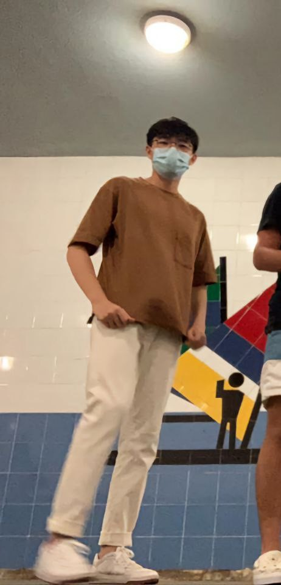

More about me
My name is Andre Chua, I am an aspiring full-stack developer but leaning more towards the back-end. I am a person with many interests and hobbies such as cooking, basketball, playing the guitar, gardening, learning new languages and even reading on philosphy. However, out of the many things that interest me, what stood out was my interest in computers.
My interest in computers started way back when I was very young. Computers being my main source of entertainment, I wanted to learn everything about it, even learning how to shut down other computers under the same WIFI using command prompt and the shutdown -i function.
Fascinated by how computers run the world now and the endless possibilities of what computers could do, I knew things related to computers and IT would be something I would pursue in the future.